Cel mai rapid mod de a avea un păr natural și sănătos
Intervenția constă în extragerea și reintroducerea unităților foliculare ale aceluiași pacient. Părul va continua să crească în mod natural, deoarece va fi prelevat dintr-o zonă „sănătoasă” — în general ceafa și tâmplele, acele părți ale capului care nu sunt afectate de calviție.
Procesul începe cu o planificare personalizată în funcție de tipul de calviție. Echipa medicală va urma pas cu pas tratamentul și va efectua o evaluare a situației tale.
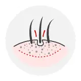
Top 5 beneficii ale tehnicii de transplant FUE
Cicatrizare minimă
FUE lasă în majoritatea cazurilor o serie de mici pete albe care sunt abia vizibile cu ochiul liber dacă părul nu este ras.
Timp scurt de recuperare
Inciziile mici lăsate de FUE nu trebuie suturate și de obicei se vindecă în câteva zile — mai puține restricții la reîntoarcerea la activitate.
Rezultate în 4 luni
Primele rezultate vor fi vizibile din a patra lună, iar în a șasea lună te poți bucura de un procent de 75% creștere.
Poți păstra părul scurt
Tunsorile scurte sunt o opțiune, deoarece cicatricile sunt minime cu tehnica FUE.
Ideal pentru transplanturi mici
Tehnica FUE poate fi preferată pentru pacienții care au nevoie doar de un număr mic de grefe sau pentru pacienții mai tineri, în stadiile incipiente ale căderii părului.
Tehnica F.U.E. Sapphire — tehnica preferată în transplantul de păr
Diferența acestei tehnici față de tehnica FUE clasică este că în timpul procesului se folosesc vârfuri de safir în loc de vârfuri de oțel. Safirul permite deschiderea unor canale mai netede în zona implantului — o incizie circulară cu diametrul de 0,7-0,8 mm — ceea ce are ca rezultat o formare minimă de cruste și grăbește procesul de vindecare.
Vârfurile de safir sunt netede și antibacteriene; astfel, mai mulți foliculi de păr pot fi transplantați, iar deteriorarea țesuturilor este minimizată.
Implantul de păr prin tehnica FUE Sapphire necesită un timp de intervenție între 4 și 7 ore, în funcție de numărul de unități foliculare necesare. Intervenția nu necesită anestezie totală, ci o simplă anestezie locală.
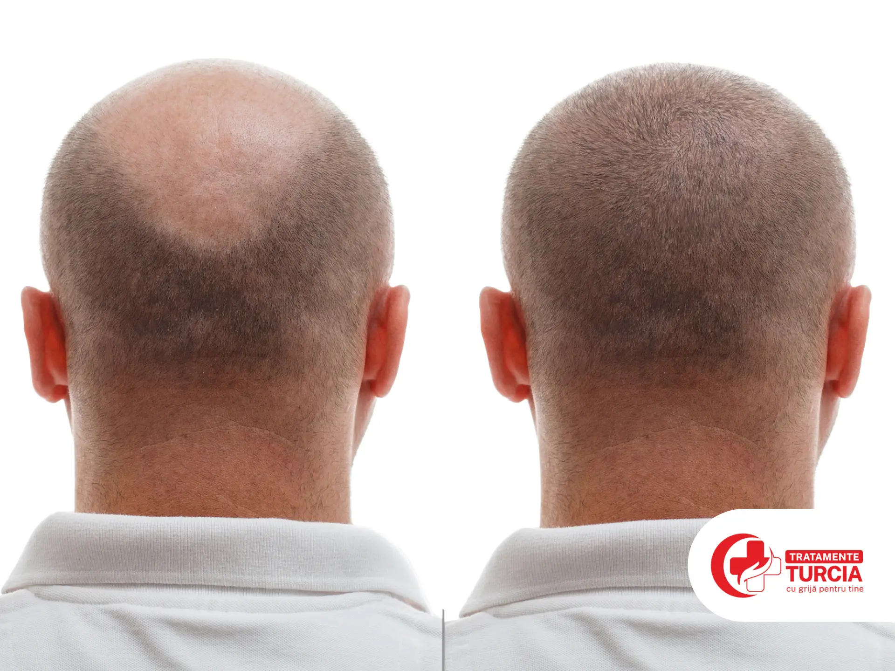
Tehnica D.H.I. — implantare directă
În cazul transplantului de păr DHI (Direct Hair Implantation), tehnica de colectare a grefei este aceeași cu tehnica FUE — diferența este etapa în care părul este transplantat. Foliculii sunt colectați cu instrumente speciale numite implantor Choi, iar canelarea și plasarea foliculilor pot fi realizate simultan.
Prin tehnica DHI, foliculii de păr sunt transferați în noile lor locuri fără a-și pierde vitalitatea — astfel se obține cel mai mare randament din transplantul de păr.
Tehnica F.U.T.
Transplantul de păr folosind tehnica F.U.T. (Follicular Unit Transplantation) implică extragerea unei benzi de țesut din zona donatoare, de obicei din partea posterioară a capului, unde părul este mai dens și mai rezistent. Banda este apoi divizată meticulos sub microscop în unități foliculare individuale, gata pentru a fi transplantate.
Principalul avantaj al tehnicii F.U.T. este eficiența sa în acoperirea unor zone extinse într-o singură sesiune. Pacienții pot vedea rezultatele inițiale în aproximativ 2-3 luni, când firele de păr transplantate încep să crească, iar firele transplantate sunt permanente.
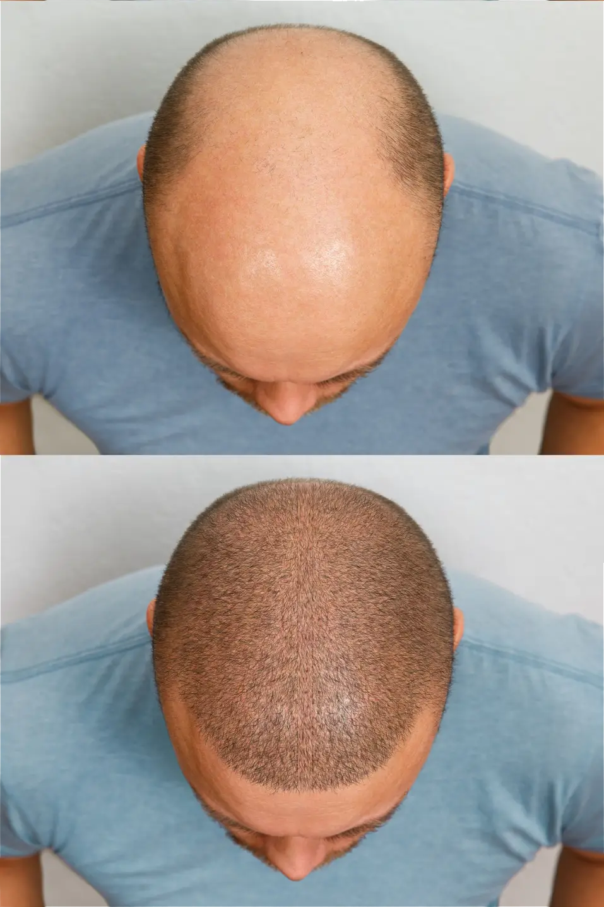
Ce trebuie să faci înainte de intervenție
- Evită aspirina, advilul, alcoolul, vitaminele, vitamina E, steroizii, cremele cu cortizon, ceaiul verde și fumatul.
- În ziua operației, fă un duș și spală-ți părul cu un șampon normal — fără spray sau loțiuni.
- Ia un mic dejun ușor, dar evită laptele, ceaiul alb sau cafeaua (cu până la 12 ore înainte de operație).
- Nu conduce singur sub influența analgezicelor, deoarece acestea provoacă somnolență.
Cum decurge intervenția și recuperarea
Pacientul nu va avea niciun fel de dureri, deoarece zona va fi anesteziată. Zona de recoltare este ceafa, fiindcă părul din această zonă nu este predispus genetic să moară și nu este sensibil la enzimele responsabile de căderea părului. Ca urmare a tehnicii minim invazive, reluarea activităților zilnice se poate face imediat.
În 10 zile de la intervenție, între 20% și 60% din părul implantat va cădea, dar rădăcina lui — implantul — rămâne. După 30-90 de zile post-implant, părul va începe să crească natural, cu circa 1 cm pe lună, iar cel mai bun rezultat (permanent) se va vedea după 8-12 luni de la intervenție.
Riscul de respingere este minor, deoarece țesutul rădăcinii de păr din zona recoltată este recunoscut de organism ca fiind țesut propriu.
Rezultate — înainte și după
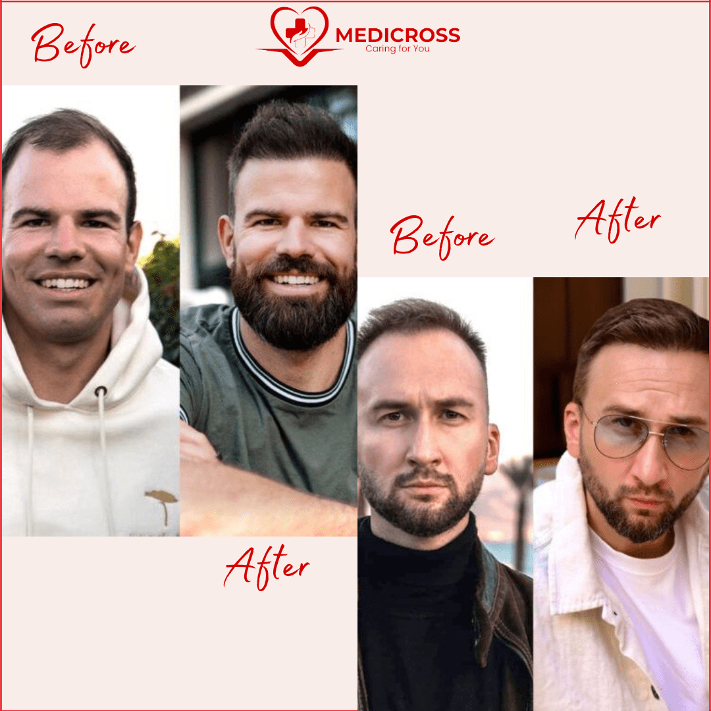
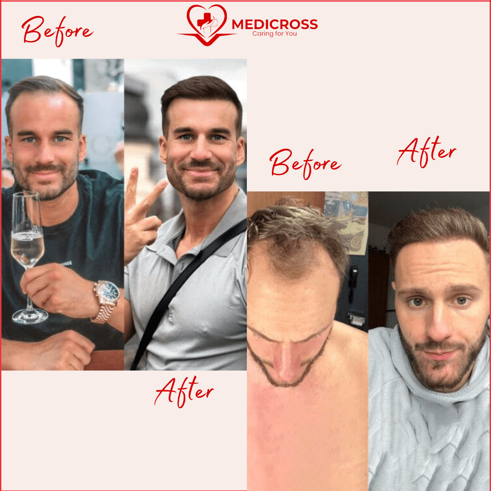
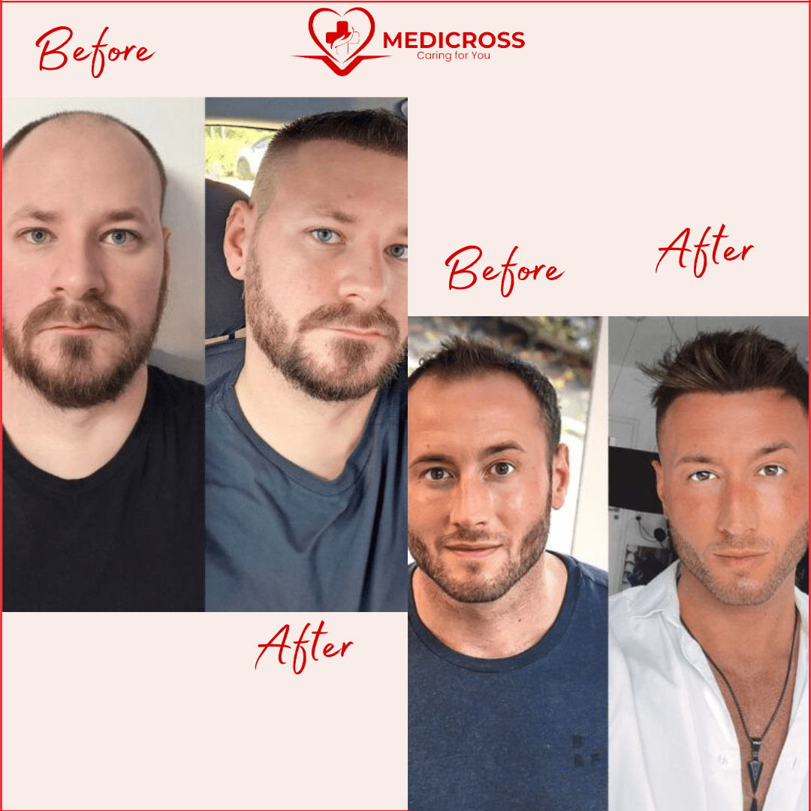
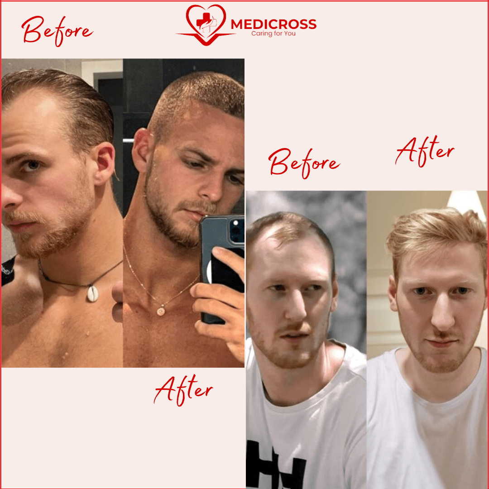
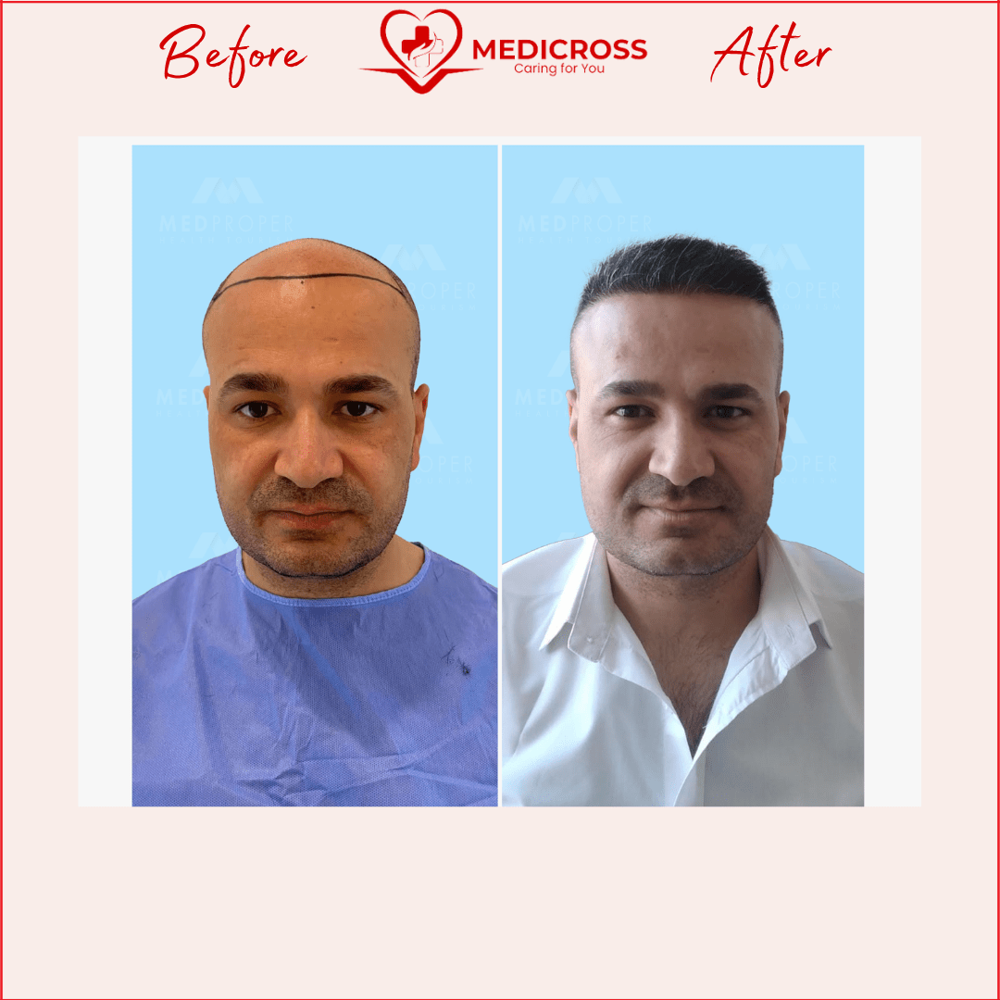
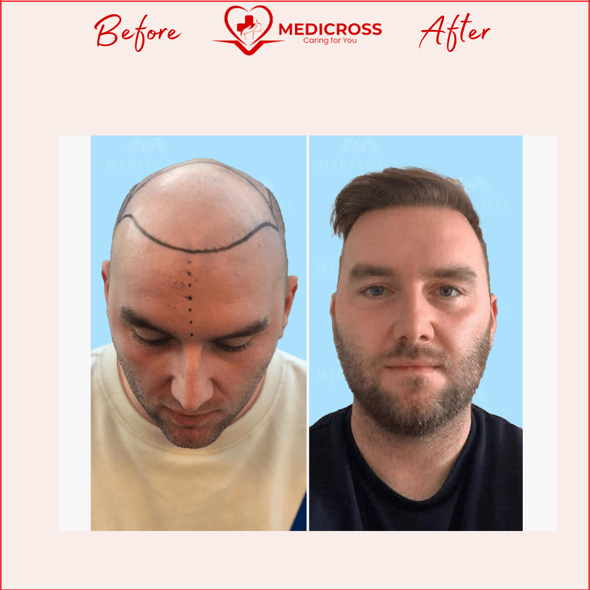
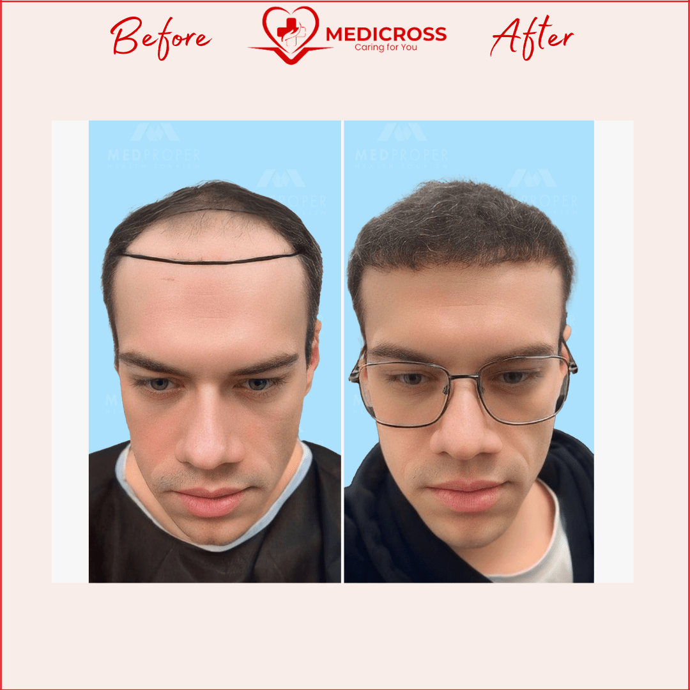
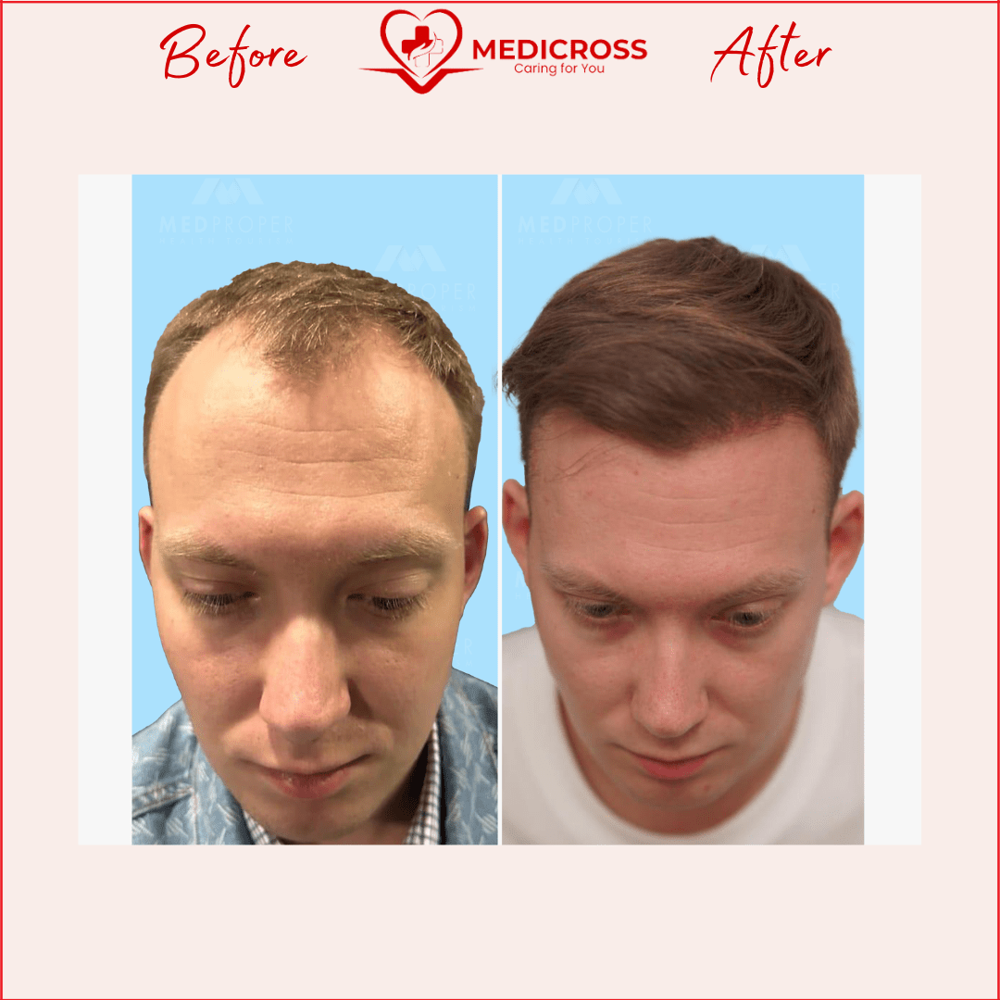
De ce să alegi Tratamente Turcia by Medicross
- Abordare personalizată, adaptată la nevoi diferite și unice pentru fiecare pacient.
- Suntem asociați cu spitale din Turcia, Istanbul, cu experiență îndelungată.
- Intervențiile medicale sunt realizate în centre dedicate.
- Împreună cu partenerii noștri am creat un întreg program dedicat pacienților.
- Asigurăm translator, fiind conștienți că pacienții noștri au nevoie de comunicare permanentă.
- Echipa medicală va fi în contact cu tine oricând ai nevoie, atât înainte, cât și după operație, pe termen lung.